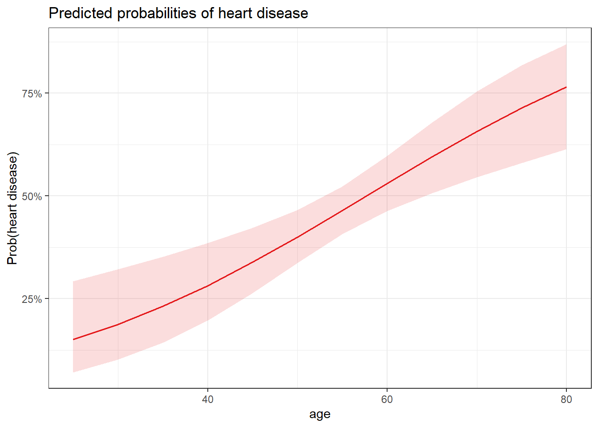
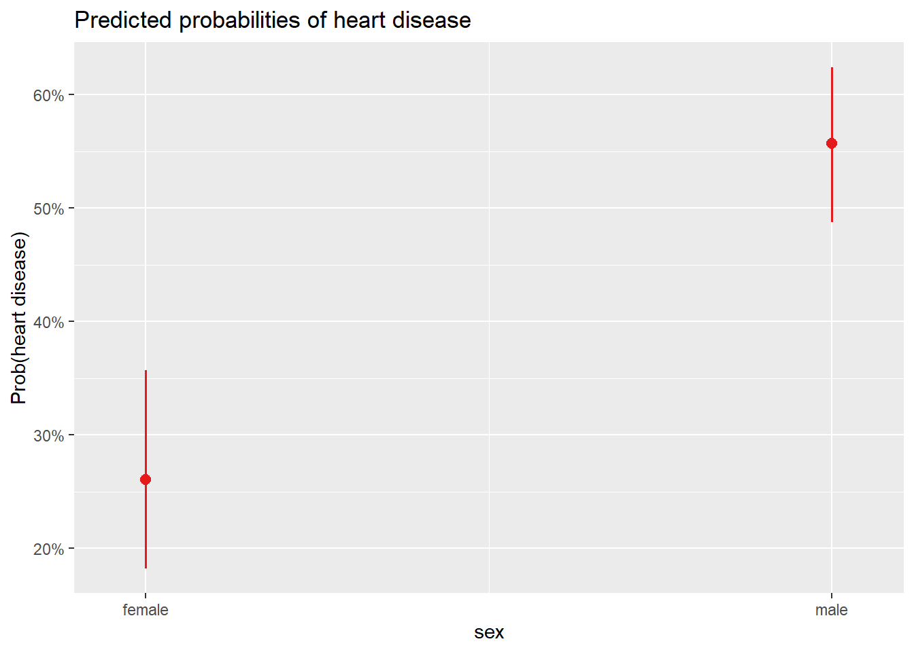
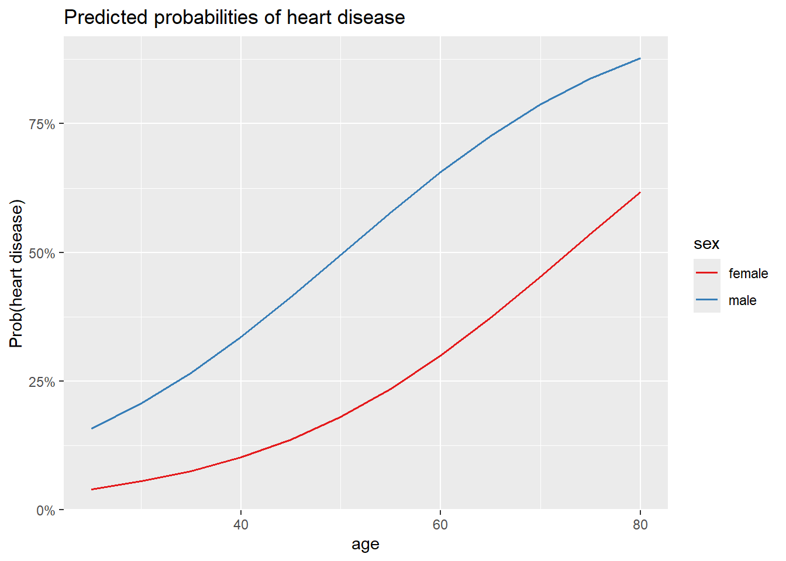
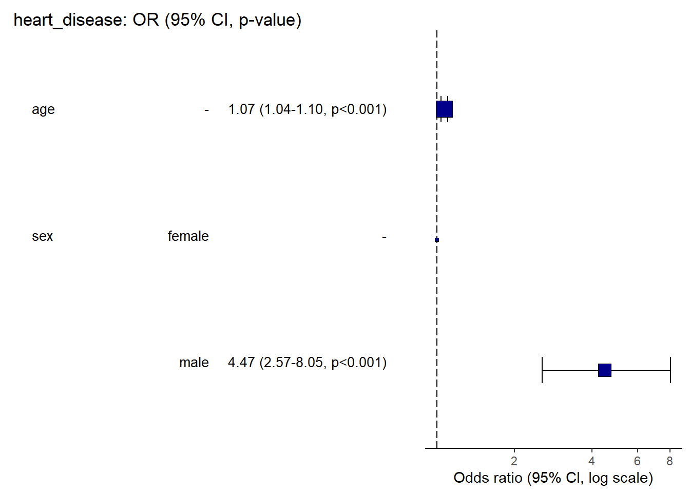

library(kmed)
dat <- heartLogistic Regression Example
The Dataset
The data is a mixed variable dataset containing 14 variables of 297 patients for their heart disease diagnosis. The data comes in an R package called kmed which you can read about on your own. Patients were diagnosed with heart disease in four classes. We will used this dataset to illustrate how multiple risk factors are related to a heart disease diagnosis, such as age (years), sex (FALSE = female; TRUE = male), chest pain (1 = typical angina, 2 = atypical angina, 3 = non-anginal pain, and 4 = asymptomatic) and thalach (max heart rate achieved).
# select variables
library(dplyr)
dat <- dat %>%
dplyr::select(
age,
sex,
cp,
thalach,
class
)
# print dataset's structure
str(dat)'data.frame': 297 obs. of 5 variables:
$ age : num 63 67 67 37 41 56 62 57 63 53 ...
$ sex : logi TRUE TRUE TRUE TRUE FALSE TRUE ...
$ cp : Factor w/ 4 levels "1","2","3","4": 1 4 4 3 2 2 4 4 4 4 ...
$ thalach: num 150 108 129 187 172 178 160 163 147 155 ...
$ class : int 0 2 1 0 0 0 3 0 2 1 ...
- attr(*, "na.action")= 'omit' Named int [1:6] 88 167 193 267 288 303
..- attr(*, "names")= chr [1:6] "88" "167" "193" "267" ...# rename variables
dat <- dat %>%
dplyr::rename(
chest_pain = cp,
max_heartrate = thalach,
heart_disease = class
)# recode sex
dat$sex <- factor(dat$sex,
levels = c(FALSE, TRUE),
labels = c("female", "male")
)# recode chest_pain
dat$chest_pain <- factor(dat$chest_pain,
levels = 1:4,
labels = c("typical angina", "atypical angina", "non-anginal pain", "asymptomatic")
)# recode heart_disease into 2 classes
dat$heart_disease <- ifelse(dat$heart_disease == 0,
0,
1
)# set labels for heart_disease
dat$heart_disease <- factor(dat$heart_disease,
levels = c(0, 1),
labels = c("no disease", "disease")
)levels(dat$heart_disease)[1] "no disease" "disease" # save model
m1 <- glm(heart_disease ~ age,
data = dat,
family = "binomial"
)summary(m1)
Call:
glm(formula = heart_disease ~ age, family = "binomial", data = dat)
Coefficients:
Estimate Std. Error z value Pr(>|z|)
(Intercept) -3.05122 0.76862 -3.970 7.2e-05 ***
age 0.05291 0.01382 3.829 0.000128 ***
---
Signif. codes: 0 '***' 0.001 '**' 0.01 '*' 0.05 '.' 0.1 ' ' 1
(Dispersion parameter for binomial family taken to be 1)
Null deviance: 409.95 on 296 degrees of freedom
Residual deviance: 394.25 on 295 degrees of freedom
AIC: 398.25
Number of Fisher Scoring iterations: 4# OR for age
exp(coef(m1)["age"]) age
1.054331 # prob(heart disease) for age = 0
exp(coef(m1)[1]) / (1 + exp(coef(m1)[1]))(Intercept)
0.04516478 # 95% CI for the OR for age
exp(confint(m1,
parm = "age"
)) 2.5 % 97.5 %
1.026699 1.083987 # predict probability to develop heart disease
pred <- predict(m1,
newdata = data.frame(age = c(30)),
type = "response"
)pred 1
0.1878525 # predict probability to develop heart disease
pred <- predict(m1,
newdata = data.frame(age = c(30)),
type = "response",
se = TRUE
)pred$fit 1
0.1878525 # 95% confidence interval for the prediction
lower <- pred$fit - (qnorm(0.975) * pred$se.fit)
upper <- pred$fit + (qnorm(0.975) * pred$se.fit)
c(lower, upper) 1 1
0.07873357 0.29697138 # 95% confidence interval for the prediction
lower <- pred$fit - (1.96 * pred$se.fit)
upper <- pred$fit + (1.96 * pred$se.fit)
c(lower, upper) 1 1
0.07873156 0.29697339 library(sjPlot)Learn more about sjPlot with 'browseVignettes("sjPlot")'.library(ggplot2)# plot
plot_model(m1,
type = "pred",
terms = "age"
) +
labs(y = "Prob(heart disease)") + theme_bw()
# levels for sex
levels(dat$sex)[1] "female" "male" # save model
m2 <- glm(heart_disease ~ sex,
data = dat,
family = "binomial"
)summary(m2)
Call:
glm(formula = heart_disease ~ sex, family = "binomial", data = dat)
Coefficients:
Estimate Std. Error z value Pr(>|z|)
(Intercept) -1.0438 0.2326 -4.488 7.18e-06 ***
sexmale 1.2737 0.2725 4.674 2.95e-06 ***
---
Signif. codes: 0 '***' 0.001 '**' 0.01 '*' 0.05 '.' 0.1 ' ' 1
(Dispersion parameter for binomial family taken to be 1)
Null deviance: 409.95 on 296 degrees of freedom
Residual deviance: 386.12 on 295 degrees of freedom
AIC: 390.12
Number of Fisher Scoring iterations: 4exp(coef(m2)["sexmale"]) sexmale
3.573933 # prob(disease) for sex = female
exp(coef(m2)[1]) / (1 + exp(coef(m2)[1]))(Intercept)
0.2604167 chisq.test(table(dat$heart_disease, dat$sex))
Pearson's Chi-squared test with Yates' continuity correction
data: table(dat$heart_disease, dat$sex)
X-squared = 21.852, df = 1, p-value = 2.946e-06# predict probability to develop heart disease
pred <- predict(m2,
newdata = data.frame(sex = c("male")),
type = "response"
)
pred 1
0.5572139 # plot
plot_model(m2,
type = "pred",
terms = "sex"
) +
labs(y = "Prob(heart disease)")
# create data frame of new patient
new_patient <- data.frame(
age = 32,
sex = "female"
)m3 <- glm(heart_disease ~ sex + age,
data = dat,
family = "binomial"
)
# predict probability to develop heart disease
pred <- predict(m3,
newdata = new_patient,
type = "response"
)
# print prediction
pred 1
0.06224456 # 1. age, sex and chest pain on prob of disease
plot_model(m3,
type = "pred",
terms = c("age", "sex"),
ci.lvl = NA # remove confidence bands
) +
labs(y = "Prob(heart disease)")Data were 'prettified'. Consider using `terms="age [all]"` to get smooth
plots.
tab_model(m3, m2,
show.ci = FALSE, # remove CI
show.aic = TRUE, # display AIC
p.style = "numeric_stars" # display p-values and stars
)| heart disease | heart disease | |||
|---|---|---|---|---|
| Predictors | Odds Ratios | p | Odds Ratios | p |
| (Intercept) | 0.01 *** | <0.001 | 0.35 *** | <0.001 |
| sex [male] | 4.47 *** | <0.001 | 3.57 *** | <0.001 |
| age | 1.07 *** | <0.001 | ||
| Observations | 297 | 297 | ||
| R2 Tjur | 0.142 | 0.078 | ||
| AIC | 370.435 | 390.118 | ||
| * p<0.05 ** p<0.01 *** p<0.001 | ||||
library(pROC)# save roc object
res <- roc(heart_disease ~ fitted(m3),
data = dat
)
# plot ROC curve
ggroc(res, legacy.axes = TRUE)
res$aucArea under the curve: 0.713# plot ROC curve with AUC in title
ggroc(res, legacy.axes = TRUE) +
labs(title = paste0("AUC = ", round(res$auc, 2)))
library(gtsummary)# print table of results
tbl_regression(m3, exponentiate = TRUE)| Characteristic | OR | 95% CI | p-value |
|---|---|---|---|
| sex | |||
| female | — | — | |
| male | 4.47 | 2.57, 8.05 | <0.001 |
| age | 1.07 | 1.04, 1.10 | <0.001 |
| Abbreviations: CI = Confidence Interval, OR = Odds Ratio | |||
library(finalfit)
# set variables
dependent <- "heart_disease"
independent <- c("age", "sex")
independent_final <- c("age", "sex", "chest_pain")
dat %>% or_plot(dependent, independent,
table_text_size = 3.5 # reduce text size
)